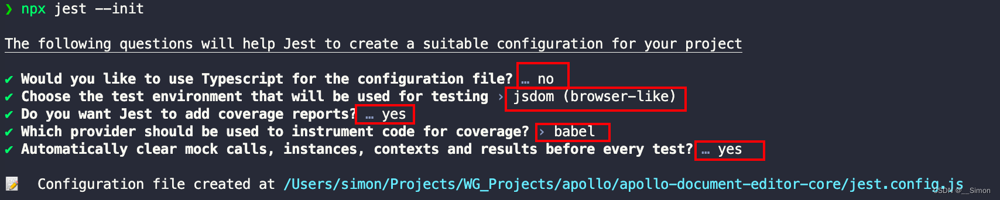
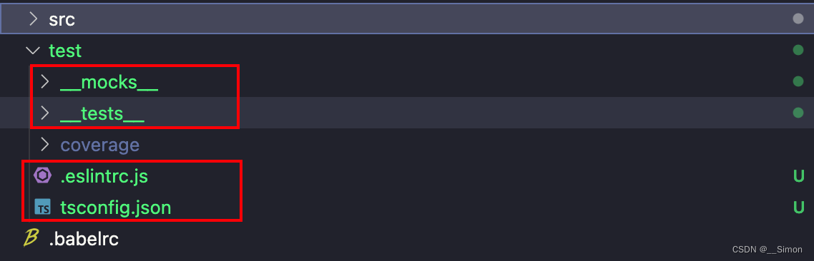

单元测试框架Jest搭配TypeScript的安装与配置
为项目安装并配置Jest单元测试环境
分步指南
传送门：Jest - 快速入门
1. 安装jest：
npm i jest ts-jest @types/jest -D
2. 初始化：
npx jest —init
按照图中所示选择

tip:
- no;不使用ts，使用jest.config.js作为jest的配置文件；
- jsdom;使用jsdom作为测试环境（jsdom:一个类似浏览器的环境，项目是运行在浏览器的，需要在浏览器dom环境下测试）；
- yes;是否添加测试报告；
- babel;使用babel提供的测试报告（官网说明v8仍处于试验阶段，需node14以上使用，效果未知，不稳定，因此选用babel）；
3. 安装jsdom环境：
- jest 28及以上版本不再内置jsdom插件，需要单独安装
- 安装官方eslint插件：
npm i jest-environment-jsdom eslint-plugin-jest eslint-import-resolver-typescript jest-canvas-mock -D
4. 创建test目录
在项目根目录下创建test目录，然后在test下创建mocks和tests__目录，创建.eslintrc.js和tsconfig.json文件

附：配置示例
jest.config.js
/*
* For a detailed explanation regarding each configuration property, visit:
* https://jestjs.io/docs/configuration
*/
const { pathsToModuleNameMapper } = require('ts-jest');
const { compilerOptions } = require('./tsconfig.json');
module.exports = {
// A preset that is used as a base for Jest's configuration
preset: 'ts-jest',
// The test environment that will be used for testing
testEnvironment: 'jsdom',
// The paths to modules that run some code to configure or set up the testing environment before each test
setupFiles: ['jest-canvas-mock'],
// Automatically clear mock calls, instances, contexts and results before every test
clearMocks: true,
// Indicates whether the coverage information should be collected while executing the test
collectCoverage: true,
// The directory where Jest should output its coverage files
coverageDirectory: 'test/coverage',
// The root directory that Jest should scan for tests and modules within
// rootDir: undefined,
// rootDir: __dirname,
// An array of file extensions your modules use
moduleFileExtensions: ['ts', 'js'],
// A map from regular expressions to module names or to arrays of module names that allow to stub out resources with a single module
moduleNameMapper: pathsToModuleNameMapper(compilerOptions.paths, {
prefix: '<rootDir>/',
}),
// The glob patterns Jest uses to detect test files
testMatch: ['<rootDir>/test/__tests__/**/*.test.ts'],
// A map from regular expressions to paths to transformers
transform: {
'^.+\\.ts$': 'ts-jest',
},
};
配置测试用例的eslint规则/test/.eslintrc.js
module.exports = {
extends: ['../.eslintrc.js'],
settings: {
'import/resolver': {
typescript: {
alwaysTryTypes: true, // always try to resolve types under `<root>@types` directory even it doesn't contain any source code, like `@types/unist`
// Choose from one of the "project" configs below or omit to use <root>/tsconfig.json by default
// use <root>/path/to/folder/tsconfig.json
project: 'tsconfig.json',
},
},
},
plugins: ['jest'],
overrides: [
// unit-tests
{
files: ['**/__tests__/**'],
rules: {
'jest/no-disabled-tests': 'warn',
'jest/no-focused-tests': 'error',
'jest/no-identical-title': 'error',
'jest/prefer-to-have-length': 'warn',
'jest/valid-expect': 'error',
},
},
],
};
代码覆盖率报告无需加入git版本管理，将test/coverage目录追加至.gitignore
...
# Unit test / coverage reports
test/coverage
tsconfig.json中配置路径别名
5. 愉快地开始单元测试：
在 test/__test__ 目录下新增自己模块的单元测试目录及文件，开始单元测试代码编写
文件命名规范： *.test.ts
6. 总结 - 踩坑记录：
- 默认preset为
babel-jest，由于Babel对Typescript的支持是通过代码转换（Transpilation）实现的，而 Jest 在运行时并不会对你的测试用例做类型检查。 因此建议安装ts-jest来开启此功能 - 主要是在配置
tsconfig.json路径别名时花费了大量时间，处理ts的报错以及eslint的报错问题； - 以上配置的路径别名只需在
tsconfig.json一处配置，随处可用，包括ts、eslint、jest都能读取同一个别名配置； - 另外对于webpack的别名配置，网上也有读取tsconfig配置的方案；
本博客所有文章除特别声明外，均采用 CC BY-NC-SA 4.0 许可协议。转载请注明来源 Simon！